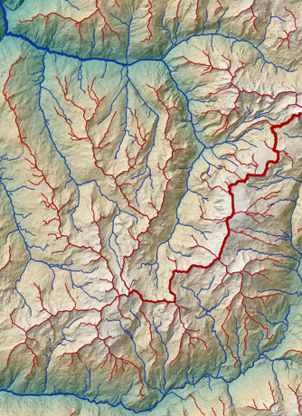
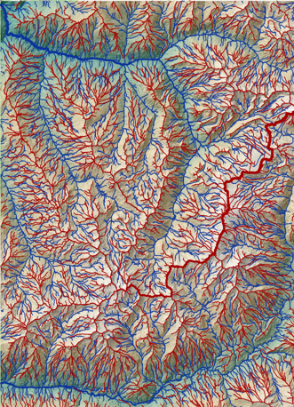
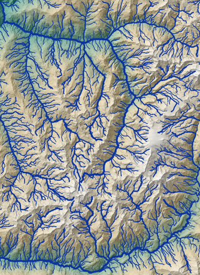

LANDMARK Outputs and Visualization Guide#
This page details the structure and content of the two main output files produced by LANDMARK, explains how to interpret their attributes, and gives best practices for their visualization in a GIS (e.g., QGIS).
Overview#
LANDMARK outputs two vector GeoPackage files (.gpkg):
Slopelines (thalweg network):
slopelines_se_HSO_<input_name>.gpkgRidgelines (ridge network):
ridgelines_se_HSO_<input_name>.gpkg
Each file contains a layer of LineString features, representing individual segments of the extracted networks, with associated attributes.
1. Slopelines (Thalweg Network)#
Description#
The slopelines file contains segments representing the primary drainage lines (thalwegs) identified in the DEM. Each segment connects two consecutive drainage points along the calculated flow network. These lines correspond to pathways of surface water concentration and potential channelization.
Key Attributes#
Field |
Type |
Description |
|---|---|---|
id_ch |
int |
Unique ID of the current slopeline segment. |
start_pnt |
int |
ID of the segment’s upstream (start) point. |
end_pnt |
int |
ID of the segment’s downstream (end) point. |
id_ch_out |
int |
ID of the next downstream segment. |
id_ch_main |
int |
ID of the main downstream segment in the hierarchy. |
A_out |
int |
Contributing area at the start point (in map units², e.g., m²). |
length |
float |
Segment length (in spatial units, e.g., meters). |
sso |
int |
Stream Segment Order (internal topological order). |
hso |
int |
Horton/Strahler stream order of the segment. |
slope_pct |
float |
Slope between endpoints (%). (if computed) |
curvature |
float |
Vertical curvature at start point. (if computed) |
Important Filtering Tips#
For QGIS visualization:
Due to network complexity, filter the displayed lines for clarity.Recommended filter:
A_out: Only show segments with a large enough contributing area (e.g.,
A_out > 10000). This emphasizes main channels and removes tiny tributaries.hso: Show segments with high stream order (e.g.,
hso >= 5) to display the main drainage skeleton.
A_out is generally the most effective filter for thalwegs, as it directly corresponds to hydrological significance.
Geomorphological Attributes#
If computed, slope_pct and curvature fields provide additional information for landform and hydrological analysis (e.g., highlighting steep or concave/convex channel segments).
2. Ridgelines (Ridge Network)#
Description#
The ridgelines file contains segments forming the primary ridge network—divides or crests separating drainage basins. Each segment connects two consecutive ridge points and corresponds to lines of maximum elevation divergence.
Key Attributes#
Field |
Type |
Description |
|---|---|---|
id_rdl |
int |
Unique ID of the ridgeline to which the segment belongs. |
start_pnt |
int |
ID of the segment’s start ridge point. |
end_pnt |
int |
ID of the segment’s end ridge point. |
length |
float |
Segment length (in spatial units, e.g., meters). |
jun_el |
int |
Index of the first junction (node) on the ridgeline. |
A_spread |
float |
Spread area: approximates the lateral area controlled by the ridge (m²). |
slope_pct |
float |
Slope between endpoints (%). (if computed) |
curvature |
float |
Vertical curvature at start point. (if computed) |
Important Filtering Tips#
For QGIS visualization:
To avoid clutter, filter ridgelines using:A_spread: Show only segments with large enough spread area (e.g.,
A_spread > 10000). This highlights the main ridges and omits minor, local divides.
Geomorphological Attributes#
Fields slope_pct and curvature, if present, allow further morphometric analysis (e.g., identifying steep or curved ridges).
Practical Tips for GIS Visualization#
Filtering in QGIS:
Open the GeoPackage layer, go to the attribute table, and use the “Select by Expression” tool to filter features (e.g.,
A_out > 5000orA_spread > 10000).You can symbolize lines by stream order (
hso) or spread area (A_spread) for clearer maps.
Display Recommendations:
For an overview, use strict thresholds to show only the main network skeleton.
For detailed studies (e.g., small catchments), lower thresholds to display more features.
Attribute Calculation Notes:
Slope and curvature are only included if you enabled the corresponding option during processing.
Spatial units (meters, m²) depend on the CRS of your DEM.
Example Outputs and Visualization in QGIS#
Below are examples of QGIS visualizations illustrating different filtering options and map styles using the output GeoPackages from LANDMARK.

LiDARHD 5 m DEM. Drainage and dispersion areas filtered at \(10^6\) m². The width of the blue (thalweg) and red (ridge) lines is proportional to the corresponding area.

LiDARHD 5 m DEM. Drainage and dispersion areas filtered at \(10^5\) m².

LiDARHD 5 m DEM. Thalweg network filtered by Horton order > 4. The width of the blue lines is proportional to the Horton order of each segment.